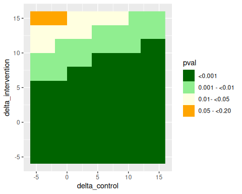

rbmi: Advanced Functionality
Alessandro Noci, Craig Gower-Page, and Marcel Wolbers
Source:vignettes/advanced.Rmd
advanced.Rmd1 Introduction
The purpose of this vignette is to provide an overview of some more advanced features of the rbmi package.
The sections of the vignette are relatively self-contained, i.e. readers should be able to jump directly to the section which covers the functionality that they are most interested in.
2 Data simulation using function simulate_data()
In order to demonstrate the advanced functions we will first create a simulated dataset with the rbmi function simulate_data().
The simulate_data() function generates data from a randomized clinical trial with longitudinal continuous outcomes and up to two different types of intercurrent events (ICEs).
One intercurrent event (ICE1) may be thought of as a discontinuation from study treatment due to study drug or condition related (SDCR) reasons.
The other event (ICE2) may be thought of as discontinuation from study treatment due to not study drug or condition related (NSDCR) reasons.
For the purpose of this vignette, we simulate data similarly to the simulation study reported in Wolbers et al. (2022) (though we change some of the simulation parameters) and include only one ICE type (ICE1).
Specifically, we simulate a 1:1 randomized trial of an active drug (intervention) versus placebo (control) with 100 subjects per group and 6 post-baseline assessments (bi-monthly visits until 12 months) under the following assumptions:
- The mean outcome trajectory in the placebo group increases linearly from 50 at baseline (visit 0) to 60 at visit 6, i.e. the slope is 10 points/year.
- The mean outcome trajectory in the intervention group is identical to the placebo group up to visit 2. From visit 2 onward, the slope decreases by 50% to 5 points/year.
- The covariance structure of the baseline and follow-up values in both groups is implied by a random intercept and slope model with a standard deviation of 5 for both the intercept and the slope, and a correlation of 0.25. In addition, an independent residual error with standard deviation 2.5 is added to each assessment.
- The probability of study drug discontinuation after each visit is calculated according to a logistic model which depends on the observed outcome at that visit. Specifically, a visit-wise discontinuation probability of 2% and 3% in the control and intervention group, respectively, is specified in case the observed outcome is equal to 50 (the mean value at baseline). The odds of a discontinuation is simulated to increase by +10% for each +1 point increase of the observed outcome.
- Study drug discontinuation is simulated to have no effect on the mean trajectory in the placebo group. In the intervention group, subjects who discontinue follow the slope of the mean trajectory from the placebo group from that time point onward. This is compatible with a copy increments in reference (CIR) assumption.
- Study drop-out at the study drug discontinuation visit occurs with a probability of 50% leading to missing outcome data from that time point onward.
The function simulate_data() requires 3 arguments (see the function documentation help(simulate_data) for more details):
-
pars_c: The simulation parameters of the control group -
pars_t: The simulation parameters of the intervention group -
post_ice1_traj: Specifies how observed outcomes after ICE1 are simulated
Below, we report how data according to the specifications above can be simulated with function simulate_data():
library(rbmi)
library(dplyr)
library(ggplot2)
library(purrr)
set.seed(122)
n <- 100
time <- c(0, 2, 4, 6, 8, 10, 12)
# Mean trajectory control
muC <- c(50.0, 51.66667, 53.33333, 55.0, 56.66667, 58.33333, 60.0)
# Mean trajectory intervention
muT <- c(50.0, 51.66667, 53.33333, 54.16667, 55.0, 55.83333, 56.66667)
# Create Sigma
sd_error <- 2.5
covRE <- rbind(
c(25.0, 6.25),
c(6.25, 25.0)
)
Sigma <- cbind(1, time / 12) %*% covRE %*% rbind(1, time / 12) + diag(sd_error^2, nrow = length(time))
# Set probability of discontinuation
probDisc_C <- 0.02
probDisc_T <- 0.03
or_outcome <- 1.10 # +1 point increase => +10% odds of discontinuation
# Set drop-out rate following discontinuation
prob_dropout <- 0.5
# Set simulation parameters of the control group
parsC <- set_simul_pars(
mu = muC,
sigma = Sigma,
n = n,
prob_ice1 = probDisc_C,
or_outcome_ice1 = or_outcome,
prob_post_ice1_dropout = prob_dropout
)
# Set simulation parameters of the intervention group
parsT <- parsC
parsT$mu <- muT
parsT$prob_ice1 <- probDisc_T
# Set assumption about post-ice trajectory
post_ice_traj <- "CIR"
# Simulate data
data <- simulate_data(
pars_c = parsC,
pars_t = parsT,
post_ice1_traj = post_ice_traj
)
head(data)
#> id visit group outcome_bl outcome_noICE ind_ice1 ind_ice2 dropout_ice1
#> 1 id_1 0 Control 57.32704 57.32704 0 0 0
#> 2 id_1 1 Control 57.32704 54.69751 1 0 1
#> 3 id_1 2 Control 57.32704 58.60702 1 0 1
#> 4 id_1 3 Control 57.32704 61.50119 1 0 1
#> 5 id_1 4 Control 57.32704 56.68363 1 0 1
#> 6 id_1 5 Control 57.32704 66.14799 1 0 1
#> outcome
#> 1 57.32704
#> 2 NA
#> 3 NA
#> 4 NA
#> 5 NA
#> 6 NA
# As a simple descriptive of the simulated data, summarize the number of subjects with ICEs and missing data
data %>%
group_by(id) %>%
summarise(
group = group[1],
any_ICE = (any(ind_ice1 == 1)),
any_NA = any(is.na(outcome))) %>%
group_by(group) %>%
summarise(
subjects_with_ICE = sum(any_ICE),
subjects_with_missings = sum(any_NA)
)
#> # A tibble: 2 × 3
#> group subjects_with_ICE subjects_with_missings
#> <fct> <int> <int>
#> 1 Control 18 8
#> 2 Intervention 25 14
3 Handling of observed post-ICE data in rbmi under reference-based imputation
rbmi always uses all non-missing outcome data from the input data set, i.e. such data are never overwritten during the imputation step or removed from the analysis step. This implies that if there are data which are considered to be irrelevant for treatment effect estimation (e.g. data after an ICE for which the estimand specified a hypothetical strategy), then such data need to be removed from the input data set by the user prior to calling the rbmi functions.
For imputation under a missing at random (MAR) strategy, all observed outcome data is also included in the fitting of the base imputation model. However, for ICEs handled using reference-based imputation methods (such as CIR, CR, and JR), rbmi excludes observed post-ICE data from the base imputation model. If these data were not excluded, then the base imputation model would mistakenly estimate mean trajectories based on a mixture of observed pre- and post-ICE data which are not relevant for reference-based imputations. However, any observed post-ICE data are added back into the data set after the fitting of the base imputation model and included as is in the subsequent imputation and analysis steps.
Post-ICE data in the control or reference group are also excluded from the base imputation model if the user specifies a reference-based imputation strategy for such ICEs. This ensures that an ICE has the same impact on the data included in the base imputation model regardless whether the ICE occurred in the control or the intervention group. On the other hand, imputation in the reference group is based on a MAR assumption even for reference-based imputation methods and it may be preferable in some settings to include such post-ICE data from the control group in the base imputation model. This can be implemented by specifying a MAR strategy for the ICE in the control group and a reference-based strategy for the same ICE in the intervention group. We will use this latter approach in our example below.
The simulated trial data from section 2 assumed that outcomes in the intervention group observed after the ICE “treatment discontinuation” follow the increments observed in the control group. Thus the imputation of missing data in the intervention group after treatment discontinuation might be performed under a reference-based copy increments in reference (CIR) assumption.
Specifically, we implement an estimator under the following assumptions:
- The endpoint of interest is the change in the outcome from baseline at each visit.
- The imputation model includes the treatment group, the (categorical) visit, treatment-by-visit interactions, the baseline outcome, and baseline outcome-by-visit interactions as covariates.
- The imputation model assumes a common unstructured covariance matrix in both treatment groups
- In the control group, all missing data are imputed under MAR whereas in the intervention group, missing post-ICE data are imputed under a CIR assumption
- The analysis model of the endpoint in the imputed datasets is a separate ANCOVA model for each visit with the treatment group as the primary covariate and adjustment for the baseline outcome value.
For illustration purposes, we chose MI based on approximate Bayesian posterior draws with 20 random imputations which is not very demanding from a computational perspective. In practical applications, the number of random imputations may need to be increased. Moreover, other imputations are also supported in rbmi. For guidance regarding the choice of the imputation approach, we refer the user to a comparison between all implemented approaches in Section 3.9 of the “Statistical Specifications” vignette (vignette("stat_specs", package = "rbmi")).
We first report the code to set the variables of the imputation and analysis models. If you are not yet familiar with the syntax, we recommend that you first check the “quickstart” vignette (vignette("quickstart", package = "rbmi")).
# Create data_ice including the subject's first visit affected by the ICE and the imputation strategy
# Imputation strategy for post-ICE data is CIR in the intervention group and MAR for the control group
# (note that ICEs which are handled using MAR are optional and do not impact the analysis
# because imputation of missing data under MAR is the default)
data_ice_CIR <- data %>%
group_by(id) %>%
filter(ind_ice1 == 1) %>% # select visits with ICEs
mutate(strategy = ifelse(group == "Intervention", "CIR", "MAR")) %>%
summarise(
visit = visit[1], # Select first visit affected by the ICE
strategy = strategy[1]
)
# Compute endpoint of interest: change from baseline and
# remove rows corresponding to baseline visits
data <- data %>%
filter(visit != 0) %>%
mutate(
change = outcome - outcome_bl,
visit = factor(visit, levels = unique(visit))
)
# Define key variables for the imputation and analysis models
vars <- set_vars(
subjid = "id",
visit = "visit",
outcome = "change",
group = "group",
covariates = c("visit*outcome_bl", "visit*group"),
strategy = "strategy"
)
vars_an <- vars
vars_an$covariates <- "outcome_bl"The chosen imputation method can be set with the function method_approxbayes() as follows:
method <- method_approxbayes(n_sample = 20)We can now sequentially call the 4 key functions of rbmi to perform the multiple imputation. Please note that the management of observed post-ICE data is performed without additional complexity for the user. draws() automatically excludes post-ICE data handled with a reference-based method (but keeps post-ICE data handled using MAR) using information provided by the argument data_ice. impute() will impute only truly missing data in data[[vars$outcome]].
draw_obj <- draws(
data = data,
data_ice = data_ice_CIR,
vars = vars,
method = method,
quiet = TRUE,
ncores = 2
)
impute_obj_CIR <- impute(
draw_obj,
references = c("Control" = "Control", "Intervention" = "Control")
)
ana_obj_CIR <- analyse(
impute_obj_CIR,
vars = vars_an
)
pool_obj_CIR <- pool(ana_obj_CIR)
pool_obj_CIR
#>
#> Pool Object
#> -----------
#> Number of Results Combined: 20
#> Method: rubin
#> Confidence Level: 0.95
#> Alternative: two.sided
#>
#> Results:
#>
#> ==================================================
#> parameter est se lci uci pval
#> --------------------------------------------------
#> trt_1 -0.486 0.512 -1.496 0.524 0.343
#> lsm_ref_1 2.62 0.362 1.907 3.333 <0.001
#> lsm_alt_1 2.133 0.362 1.42 2.847 <0.001
#> trt_2 -0.066 0.542 -1.135 1.004 0.904
#> lsm_ref_2 3.707 0.384 2.95 4.464 <0.001
#> lsm_alt_2 3.641 0.383 2.885 4.397 <0.001
#> trt_3 -1.782 0.607 -2.979 -0.585 0.004
#> lsm_ref_3 5.841 0.428 4.997 6.685 <0.001
#> lsm_alt_3 4.059 0.428 3.214 4.904 <0.001
#> trt_4 -2.518 0.692 -3.884 -1.152 <0.001
#> lsm_ref_4 7.656 0.492 6.685 8.627 <0.001
#> lsm_alt_4 5.138 0.488 4.176 6.1 <0.001
#> trt_5 -3.658 0.856 -5.346 -1.97 <0.001
#> lsm_ref_5 9.558 0.598 8.379 10.737 <0.001
#> lsm_alt_5 5.9 0.608 4.699 7.101 <0.001
#> trt_6 -4.537 0.954 -6.42 -2.655 <0.001
#> lsm_ref_6 11.048 0.666 9.735 12.362 <0.001
#> lsm_alt_6 6.511 0.674 5.181 7.841 <0.001
#> --------------------------------------------------This last output gives an estimated difference of -4.537 (95% CI -6.420 to -2.655) between the two groups at the last visit with an associated p-value lower than 0.001.
4 Efficiently changing reference-based imputation strategies
The draws() function is by far the most computationally intensive function in rbmi.
In some settings, it may be important to explore the impact of a change in the
reference-based imputation strategy on the results.
Such a change does not affect the imputation model but it does
affect the subsequent imputation step.
In order to allow changes in the imputation strategy without having to re-run the
draws() function, the function impute() has an additional argument update_strategies.
However, please note that this functionality comes with some important limitations:
As described at the beginning of Section 3, post-ICE outcomes are included in the input dataset for the base imputation model if the imputation method is MAR but they are excluded for reference-based imputation methods (such as CIR, CR, and JR).
Therefore, updata_strategies cannot be applied if the imputation strategy is changed from a MAR to a non-MAR strategy in the presence of observed post-ICE outcomes. Similarly, a change from a non-MAR strategy to MAR triggers a warning in the presence of observed post-ICE outcomes because the base imputation model was not fitted to all relevant data under MAR.
Finally, update_strategies cannot be applied if the timing of any of the ICEs is changed (in argument data_ice) in addition to the imputation strategy.
As an example, we described an analysis under a copy increments in reference (CIR) assumption in the previous section. Let’s assume we want to change this strategy to a jump to reference imputation strategy for a sensitivity analysis. This can be efficiently implemented using update_strategies as follows:
# Change ICE strategy from CIR to JR
data_ice_JR <- data_ice_CIR %>%
mutate(strategy = ifelse(strategy == "CIR", "JR", strategy))
impute_obj_JR <- impute(
draw_obj,
references = c("Control" = "Control", "Intervention" = "Control"),
update_strategy = data_ice_JR
)
ana_obj_JR <- analyse(
impute_obj_JR,
vars = vars_an
)
pool_obj_JR <- pool(ana_obj_JR)
pool_obj_JR
#>
#> Pool Object
#> -----------
#> Number of Results Combined: 20
#> Method: rubin
#> Confidence Level: 0.95
#> Alternative: two.sided
#>
#> Results:
#>
#> ==================================================
#> parameter est se lci uci pval
#> --------------------------------------------------
#> trt_1 -0.485 0.513 -1.496 0.526 0.346
#> lsm_ref_1 2.609 0.363 1.892 3.325 <0.001
#> lsm_alt_1 2.124 0.361 1.412 2.836 <0.001
#> trt_2 -0.06 0.535 -1.115 0.995 0.911
#> lsm_ref_2 3.694 0.378 2.948 4.441 <0.001
#> lsm_alt_2 3.634 0.381 2.882 4.387 <0.001
#> trt_3 -1.767 0.598 -2.948 -0.587 0.004
#> lsm_ref_3 5.845 0.422 5.012 6.677 <0.001
#> lsm_alt_3 4.077 0.432 3.225 4.93 <0.001
#> trt_4 -2.529 0.686 -3.883 -1.175 <0.001
#> lsm_ref_4 7.637 0.495 6.659 8.614 <0.001
#> lsm_alt_4 5.108 0.492 4.138 6.078 <0.001
#> trt_5 -3.523 0.856 -5.212 -1.833 <0.001
#> lsm_ref_5 9.554 0.61 8.351 10.758 <0.001
#> lsm_alt_5 6.032 0.611 4.827 7.237 <0.001
#> trt_6 -4.36 0.952 -6.238 -2.482 <0.001
#> lsm_ref_6 11.003 0.676 9.669 12.337 <0.001
#> lsm_alt_6 6.643 0.687 5.287 8 <0.001
#> --------------------------------------------------For imputations under a jump to reference assumption, we get an estimated difference of -4.360 (95% CI -6.238 to -2.482) between the two groups at the last visit with an associated p-value of <0.001.
5 Imputation under MAR with time-varying covariates
rbmi supports the inclusion of time-varying covariates in the imputation model. This is particularly useful for implementing so-called retrieved dropout models.
The vignette “Implementation of retrieved-dropout models using rbmi” (vignette(topic = "retrieved_dropout", package = "rbmi")) contains examples of such models.
6 Custom imputation strategies
The following imputation strategies are implemented in rbmi:
- Missing at Random (
MAR) - Jump to Reference (
JR) - Copy Reference (
CR) - Copy Increments in Reference (
CIR) - Last Mean Carried Forward (
LMCF)
In addition, rbmi allows the user to implement their own imputation strategy.
To do this, the user needs to do three things:
- Define a function implementing the new imputation strategy.
- Specify which patients use this strategy in the
data_icedataset provided todraws(). - Provide the imputation strategy function to
impute().
The imputation strategy function must take 3 arguments (pars_group, pars_ref, and index_mar) and calculates the mean and covariance matrix of the subject’s marginal imputation distribution which will then be applied to subjects to which the strategy applies.
Here, pars_group contains the predicted mean trajectory (pars_group$mu, a numeric vector) and covariance matrix (pars_group$sigma) for a subject conditional on their assigned treatment group and covariates.
pars_ref contains the corresponding mean trajectory and covariance matrix conditional on the reference group and the subject’s covariates.
index_mar is a logical vector which specifies for each visit whether the visit is unaffected by an ICE handled using a non-MAR method or not.
As an example, the user can check how the CIR strategy was implemented by looking at function strategy_CIR().
strategy_CIR
#> function (pars_group, pars_ref, index_mar)
#> {
#> if (all(index_mar)) {
#> return(pars_group)
#> }
#> else if (all(!index_mar)) {
#> return(pars_ref)
#> }
#> mu <- pars_group$mu
#> last_mar <- which(!index_mar)[1] - 1
#> increments_from_last_mar_ref <- pars_ref$mu[!index_mar] -
#> pars_ref$mu[last_mar]
#> mu[!index_mar] <- mu[last_mar] + increments_from_last_mar_ref
#> sigma <- compute_sigma(sigma_group = pars_group$sigma, sigma_ref = pars_ref$sigma,
#> index_mar = index_mar)
#> pars <- list(mu = mu, sigma = sigma)
#> return(pars)
#> }
#> <bytecode: 0x55ac430889c8>
#> <environment: namespace:rbmi>To further illustrate this for a simple example, assume that a new strategy is to be implemented as follows: - The marginal mean of the imputation distribution is equal to the marginal mean trajectory for the subject according to their assigned group and covariates up to the ICE. - After the ICE the marginal mean of the imputation distribution is equal to the average of the visit-wise marginal means based on the subjects covariates and the assigned group or the reference group, respectively. - For the covariance matrix of the marginal imputation distribution, the covariance matrix from the assigned group is taken.
To do this, we first need to define the imputation function which for this example could be coded as follows:
strategy_AVG <- function(pars_group, pars_ref, index_mar) {
mu_mean <- (pars_group$mu + pars_ref$mu) / 2
x <- pars_group
x$mu[!index_mar] <- mu_mean[!index_mar]
return(x)
}And an example showing its use:
pars_group <- list(
mu = c(1, 2, 3),
sigma = as_vcov(c(1, 3, 2), c(0.4, 0.5, 0.45))
)
pars_ref <- list(
mu = c(5, 6, 7),
sigma = as_vcov(c(2, 1, 1), c(0.7, 0.8, 0.5))
)
index_mar <- c(TRUE, TRUE, FALSE)
strategy_AVG(pars_group, pars_ref, index_mar)
#> $mu
#> [1] 1 2 5
#>
#> $sigma
#> [,1] [,2] [,3]
#> [1,] 1.0 1.2 1.0
#> [2,] 1.2 9.0 2.7
#> [3,] 1.0 2.7 4.0To incorporate this into rbmi, data_ice needs to be updated such that the strategy AVG is specified for visits affected by the ICE. Additionally, the function needs
to be provided to impute() via the getStrategies() function as shown below:
data_ice_AVG <- data_ice_CIR %>%
mutate(strategy = ifelse(strategy == "CIR", "AVG", strategy))
draw_obj <- draws(
data = data,
data_ice = data_ice_AVG,
vars = vars,
method = method,
quiet = TRUE
)
impute_obj <- impute(
draw_obj,
references = c("Control" = "Control", "Intervention" = "Control"),
strategies = getStrategies(AVG = strategy_AVG)
)Then, the analysis could proceed by calling analyse() and pool() as before.
7 Custom analysis functions
By default rbmi will analyse the data by using the ancova() function.
This analysis function fits an ANCOVA model to the outcomes from each visit separately,
and returns the “treatment effect” estimate as well as the corresponding least square means
for each group. If the user wants to perform a different analysis, or return different
statistics from the analysis, then this can be done by using a custom analysis function.
Beware that the validity of the conditional mean imputation method has only been formally established for analysis functions corresponding to linear models (such as ANCOVA) and caution is
required when applying alternative analysis functions for this method.
The custom analysis function must take a data.frame as its
first argument and return a named list with each element itself being a list
containing at a minimum a point estimate, called est.
For method method_bayes() or method_approxbayes(), the list must additionally contain a
standard error (element se) and, if available, the degrees of freedom of the complete-data analysis model (element df).
As a simple example, we replicate the ANCOVA analysis at the last visit for the CIR-based imputations with a user-defined analysis function below:
compare_change_lastvisit <- function(data, ...) {
fit <- lm(change ~ group + outcome_bl, data = data, subset = (visit == 6) )
res <- list(
trt = list(
est = coef(fit)["groupIntervention"],
se = sqrt(vcov(fit)["groupIntervention", "groupIntervention"]),
df = df.residual(fit)
)
)
return(res)
}
ana_obj_CIR6 <- analyse(
impute_obj_CIR,
fun = compare_change_lastvisit,
vars = vars_an
)
pool(ana_obj_CIR6)
#>
#> Pool Object
#> -----------
#> Number of Results Combined: 20
#> Method: rubin
#> Confidence Level: 0.95
#> Alternative: two.sided
#>
#> Results:
#>
#> =================================================
#> parameter est se lci uci pval
#> -------------------------------------------------
#> trt -4.537 0.954 -6.42 -2.655 <0.001
#> -------------------------------------------------As a second example, assume that for a supplementary analysis the user wants to compare the proportion of subjects with a change from baseline of >10 points at the last visit between the treatment groups with the baseline outcome as an additional covariate. This could lead to the following basic analysis function:
compare_prop_lastvisit <- function(data, ...) {
fit <- glm(
I(change > 10) ~ group + outcome_bl,
family = binomial(),
data = data,
subset = (visit == 6)
)
res <- list(
trt = list(
est = coef(fit)["groupIntervention"],
se = sqrt(vcov(fit)["groupIntervention", "groupIntervention"]),
df = NA
)
)
return(res)
}
ana_obj_prop <- analyse(
impute_obj_CIR,
fun = compare_prop_lastvisit,
vars = vars_an
)
pool_obj_prop <- pool(ana_obj_prop)
pool_obj_prop
#>
#> Pool Object
#> -----------
#> Number of Results Combined: 20
#> Method: rubin
#> Confidence Level: 0.95
#> Alternative: two.sided
#>
#> Results:
#>
#> =================================================
#> parameter est se lci uci pval
#> -------------------------------------------------
#> trt -1.052 0.314 -1.667 -0.438 0.001
#> -------------------------------------------------
tmp <- as.data.frame(pool_obj_prop) %>%
mutate(
OR = exp(est),
OR.lci = exp(lci),
OR.uci = exp(uci)
) %>%
select(parameter, OR, OR.lci, OR.uci)
tmp
#> parameter OR OR.lci OR.uci
#> 1 trt 0.3491078 0.188807 0.6455073Note that if the user wants rbmi to use a normal approximation to the pooled test statistics, then the degrees of freedom need to be set to df = NA (as per the above example). If the degrees of freedom of the complete data test statistics are known or if the degrees of freedom are set to df = Inf, then rbmi pools the degrees of freedom across imputed datasets according to the rule by Barnard and Rubin (see the “Statistical Specifications” vignette (vignette("stat_specs", package = "rbmi") for details). According to this rule, infinite degrees of freedom for the complete data analysis do not imply that the pooled degrees of freedom are also infinite.
Rather, in this case the pooled degrees of freedom are (M-1)/lambda^2, where M is the number of imputations and lambda is the fraction of missing information (see Barnard and Rubin (1999) for details).
8 Sensitivity analyses: Delta adjustments and tipping point analyses
Delta-adjustments are used to impute missing data under a not missing at random (NMAR) assumption. This reflects the belief that unobserved outcomes would have been systematically “worse” (or “better”) than “comparable” observed outcomes. For an extensive discussion of delta-adjustment methods, we refer to Cro et al. (2020).
In rbmi, a marginal delta-adjustment approach is implemented. This means that the delta-adjustment is applied to the dataset after data imputation under MAR or reference-based missing data assumptions and prior to the analysis of the imputed data.
Sensitivity analysis using delta-adjustments can therefore be performed without having to re-fit the imputation model. In rbmi, they are implemented via the delta argument of the analyse() function.
8.1 Simple delta adjustments and tipping point analyses
The delta argument of analyse() allows users to modify the outcome variable prior to the analysis.
To do this, the user needs to provide a data.frame which contains columns for the subject and visit (to identify the observation to be adjusted) plus an additional column called delta which specifies the value which will be added to the outcomes prior to the analysis.
The delta_template() function supports the user in creating this data.frame: it creates a skeleton data.frame containing one row per subject and visit with the value of delta set to 0 for all observations:
dat_delta <- delta_template(imputations = impute_obj_CIR)
head(dat_delta)
#> id visit group is_mar is_missing is_post_ice strategy delta
#> 1 id_1 1 Control TRUE TRUE TRUE MAR 0
#> 2 id_1 2 Control TRUE TRUE TRUE MAR 0
#> 3 id_1 3 Control TRUE TRUE TRUE MAR 0
#> 4 id_1 4 Control TRUE TRUE TRUE MAR 0
#> 5 id_1 5 Control TRUE TRUE TRUE MAR 0
#> 6 id_1 6 Control TRUE TRUE TRUE MAR 0Note that the output of delta_template() contains additional information which can be used to properly re-set variable delta.
For example, assume that the user wants to implement a delta-adjustment to the imputed values under CIR described in section 3.
Specifically, assume that a fixed “worsening adjustment” of +5 points is applied to all imputed values regardless of the treatment group. This could be programmed as follows:
# Set delta-value to 5 for all imputed (previously missing) outcomes and 0 for all other outcomes
dat_delta <- delta_template(imputations = impute_obj_CIR) %>%
mutate(delta = is_missing * 5)
# Repeat the analyses with the delta-adjusted values and pool results
ana_delta <- analyse(
impute_obj_CIR,
delta = dat_delta,
vars = vars_an
)
pool(ana_delta)
#>
#> Pool Object
#> -----------
#> Number of Results Combined: 20
#> Method: rubin
#> Confidence Level: 0.95
#> Alternative: two.sided
#>
#> Results:
#>
#> ==================================================
#> parameter est se lci uci pval
#> --------------------------------------------------
#> trt_1 -0.482 0.524 -1.516 0.552 0.359
#> lsm_ref_1 2.718 0.37 1.987 3.448 <0.001
#> lsm_alt_1 2.235 0.37 1.505 2.966 <0.001
#> trt_2 -0.016 0.56 -1.12 1.089 0.978
#> lsm_ref_2 3.907 0.396 3.125 4.688 <0.001
#> lsm_alt_2 3.891 0.395 3.111 4.671 <0.001
#> trt_3 -1.684 0.641 -2.948 -0.42 0.009
#> lsm_ref_3 6.092 0.452 5.201 6.983 <0.001
#> lsm_alt_3 4.408 0.452 3.515 5.3 <0.001
#> trt_4 -2.359 0.741 -3.821 -0.897 0.002
#> lsm_ref_4 7.951 0.526 6.913 8.99 <0.001
#> lsm_alt_4 5.593 0.522 4.563 6.623 <0.001
#> trt_5 -3.34 0.919 -5.153 -1.526 <0.001
#> lsm_ref_5 9.899 0.643 8.631 11.168 <0.001
#> lsm_alt_5 6.559 0.653 5.271 7.848 <0.001
#> trt_6 -4.21 1.026 -6.236 -2.184 <0.001
#> lsm_ref_6 11.435 0.718 10.019 12.851 <0.001
#> lsm_alt_6 7.225 0.725 5.793 8.656 <0.001
#> --------------------------------------------------The same approach can be used to implement a tipping point analysis. Here, we apply different delta-adjustments to imputed data from the control and the intervention group, respectively. Assume that delta-adjustments by less then -5 points or by more than +15 points are considered implausible from a clinical perspective. Therefore, we vary the delta-values in each group between -5 to +15 points to investigate which delta combinations lead to a “tipping” of the primary analysis result, defined here as an analysis p-value \(\geq 0.05\).
perform_tipp_analysis <- function(delta_control, delta_intervention) {
# Derive delta offset based on control and intervention specific deltas
delta_df <- delta_df_init %>%
mutate(
delta_ctl = (group == "Control") * is_missing * delta_control,
delta_int = (group == "Intervention") * is_missing * delta_intervention,
delta = delta_ctl + delta_int
)
ana_delta <- analyse(
impute_obj_CIR,
fun = compare_change_lastvisit,
vars = vars_an,
delta = delta_df,
)
pool_delta <- as.data.frame(pool(ana_delta))
list(
trt_effect_6 = pool_delta[["est"]],
pval_6 = pool_delta[["pval"]]
)
}
# Get initial delta template
delta_df_init <- delta_template(impute_obj_CIR)
tipp_frame_grid <- expand.grid(
delta_control = seq(-5, 15, by = 2),
delta_intervention = seq(-5, 15, by = 2)
) %>%
as_tibble()
tipp_frame <- tipp_frame_grid %>%
mutate(
results_list = map2(delta_control, delta_intervention, perform_tipp_analysis),
trt_effect_6 = map_dbl(results_list, "trt_effect_6"),
pval_6 = map_dbl(results_list, "pval_6")
) %>%
select(-results_list) %>%
mutate(
pval = cut(
pval_6,
c(0, 0.001, 0.01, 0.05, 0.2, 1),
right = FALSE,
labels = c("<0.001", "0.001 - <0.01", "0.01- <0.05", "0.05 - <0.20", ">= 0.20")
)
)
# Show delta values which lead to non-significant analysis results
tipp_frame %>%
filter(pval_6 >= 0.05)
#> # A tibble: 3 × 5
#> delta_control delta_intervention trt_effect_6 pval_6 pval
#> <dbl> <dbl> <dbl> <dbl> <fct>
#> 1 -5 15 -1.99 0.0935 0.05 - <0.20
#> 2 -3 15 -2.15 0.0704 0.05 - <0.20
#> 3 -1 15 -2.31 0.0527 0.05 - <0.20
ggplot(tipp_frame, aes(delta_control, delta_intervention, fill = pval)) +
geom_raster() +
scale_fill_manual(values = c("darkgreen", "lightgreen", "lightyellow", "orange", "red"))
According to this analysis, the significant test result from the primary analysis under CIR could only be tipped to a non-significant result for rather extreme delta-adjustments. Please note that for a real analysis it is recommended to use a smaller step size in the grid than what has been used here.
8.2 More flexible delta-adjustments using the dlag and delta arguments of delta_template()
So far, we have only discussed simple delta arguments which add the same value to all imputed values.
However, the user may want to apply more flexible delta-adjustments to missing values after an intercurrent event (ICE) and vary the magnitude of the delta adjustment depending on the how far away the visit in question is from the ICE visit.
To facilitate the creation of such flexible delta-adjustments, the delta_template() function has two optional additional arguments delta
and dlag. The delta argument specifies the default amount of delta
that should be applied to each post-ICE visit, whilst
dlag specifies the scaling coefficient to be applied based upon the visits proximity
to the first visit affected by the ICE. By default, the delta will only be added to unobserved (i.e. imputed) post-ICE
outcomes but this can be changed by setting the optional argument missing_only = FALSE.
The usage of the delta and dlag arguments is best illustrated with a few examples:
Assume a setting with 4 visits and that the user specified delta = c(5,6,7,8) and dlag=c(1,2,3,4).
For a subject for whom the first visit affected by the ICE is visit 2, these values of delta and dlag would imply the following delta offset:
v1 v2 v3 v4
--------------
5 6 7 8 # delta assigned to each visit
0 1 2 3 # scaling starting from the first visit after the subjects ICE
--------------
0 6 14 24 # delta * scaling
--------------
0 6 20 44 # cumulative sum (i.e. delta) to be applied to each visitThat is, the subject would have a delta offset of 0 applied to visit v1, 6 for visit v2, 20 for visit v3 and 44 for visit v4.
Assume instead, that the subject’s first visit affected by the ICE was visit 3. Then, the above values of delta and dlag would imply the following delta offset:
v1 v2 v3 v4
--------------
5 6 7 8 # delta assigned to each visit
0 0 1 2 # scaling starting from the first visit after the subjects ICE
--------------
0 0 7 16 # delta * scaling
--------------
0 0 7 23 # cumulative sum (i.e. delta) to be applied to each visitTo apply a constant delta value of +5 to all visits affected by the ICE
regardless of their proximity to the first ICE visit, one could set delta = c(5,5,5,5) and dlag = c(1,0,0,0).
Alternatively, it may be more straightforward for this setting to call the delta_template() function without the delta and dlag arguments and then overwrite the delta column of the resulting data.frame as described in the previous section (and additionally relying on the is_post_ice variable).
Another way of using these arguments is to set delta to the difference in time
between visits and dlag to be the amount of delta per unit of time. For example,
let’s say that visits occur on weeks 1, 5, 6 and 9 and that we want a delta of 3
to be applied for each week after an ICE.
For simplicity, we assume that the ICE occurs immediately after the subject’s last visit which
is not affected by the ICE. This this could be achieved by setting
delta = c(1,4,1,3) (the difference in weeks between each visit) and dlag = c(3, 3, 3, 3).
Assume a subject’s first visit affected by the ICE was visit v2, then these values of delta and dlag would imply the following delta offsets:
v1 v2 v3 v4
--------------
1 4 1 3 # delta assigned to each visit
0 3 3 3 # scaling starting from the first visit after the subjects ICE
--------------
0 12 3 9 # delta * scaling
--------------
0 12 15 24 # cumulative sum (i.e. delta) to be applied to each visitTo wrap up, we show this in action for our simulated dataset from section 2 and the imputed datasets
based on a CIR assumption from section 3.
The simulation setting specified follow-up visits at months 2, 4, 6, 8, 10, and 12.
Assume that we want to apply a delta-adjustment of 1 for every month after an ICE to unobserved post-ICE visits from the intervention group only. (E.g. if the ICE occurred immediately after the month 4 visit, then the total delta applied to a missing value from the month 10 visit would be 6.)
To program this, we first use the delta and dlag arguments of delta_template() to set up a corresponding template data.frame:
delta_df <- delta_template(
impute_obj_CIR,
delta = c(2, 2, 2, 2, 2, 2),
dlag = c(1, 1, 1, 1, 1, 1)
)
head(delta_df)
#> id visit group is_mar is_missing is_post_ice strategy delta
#> 1 id_1 1 Control TRUE TRUE TRUE MAR 2
#> 2 id_1 2 Control TRUE TRUE TRUE MAR 4
#> 3 id_1 3 Control TRUE TRUE TRUE MAR 6
#> 4 id_1 4 Control TRUE TRUE TRUE MAR 8
#> 5 id_1 5 Control TRUE TRUE TRUE MAR 10
#> 6 id_1 6 Control TRUE TRUE TRUE MAR 12Next, we can use the additional metadata variables provided by delta_template() to manually
reset the delta values for the control group back to 0:
delta_df2 <- delta_df %>%
mutate(delta = if_else(group == "Control", 0, delta))
head(delta_df2)
#> id visit group is_mar is_missing is_post_ice strategy delta
#> 1 id_1 1 Control TRUE TRUE TRUE MAR 0
#> 2 id_1 2 Control TRUE TRUE TRUE MAR 0
#> 3 id_1 3 Control TRUE TRUE TRUE MAR 0
#> 4 id_1 4 Control TRUE TRUE TRUE MAR 0
#> 5 id_1 5 Control TRUE TRUE TRUE MAR 0
#> 6 id_1 6 Control TRUE TRUE TRUE MAR 0Finally, we can use our delta data.frame to apply the desired delta offset to our analysis:
ana_delta <- analyse(impute_obj_CIR, delta = delta_df2, vars = vars_an)
pool(ana_delta)
#>
#> Pool Object
#> -----------
#> Number of Results Combined: 20
#> Method: rubin
#> Confidence Level: 0.95
#> Alternative: two.sided
#>
#> Results:
#>
#> ==================================================
#> parameter est se lci uci pval
#> --------------------------------------------------
#> trt_1 -0.446 0.514 -1.459 0.567 0.386
#> lsm_ref_1 2.62 0.363 1.904 3.335 <0.001
#> lsm_alt_1 2.173 0.363 1.458 2.889 <0.001
#> trt_2 0.072 0.546 -1.006 1.15 0.895
#> lsm_ref_2 3.708 0.387 2.945 4.471 <0.001
#> lsm_alt_2 3.78 0.386 3.018 4.542 <0.001
#> trt_3 -1.507 0.626 -2.743 -0.272 0.017
#> lsm_ref_3 5.844 0.441 4.973 6.714 <0.001
#> lsm_alt_3 4.336 0.442 3.464 5.209 <0.001
#> trt_4 -2.062 0.731 -3.504 -0.621 0.005
#> lsm_ref_4 7.658 0.519 6.634 8.682 <0.001
#> lsm_alt_4 5.596 0.515 4.58 6.612 <0.001
#> trt_5 -2.938 0.916 -4.746 -1.13 0.002
#> lsm_ref_5 9.558 0.641 8.293 10.823 <0.001
#> lsm_alt_5 6.62 0.651 5.335 7.905 <0.001
#> trt_6 -3.53 1.045 -5.591 -1.469 0.001
#> lsm_ref_6 11.045 0.73 9.604 12.486 <0.001
#> lsm_alt_6 7.515 0.738 6.058 8.971 <0.001
#> --------------------------------------------------